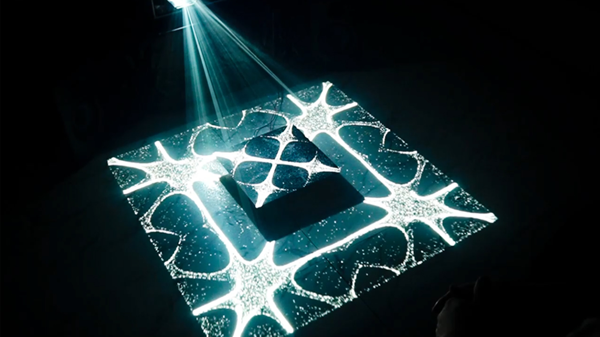

CymaSenses
Working period
2023月8月
Tools
Touchdesigner、AbletonLive、MaxMsp、Arduino、bHapticsPlayer、OSC
Device
Arduino、Projector、TactSuit、Headphone
Role
Programing、MakeAudio、MakeMovie
Concept
視覚、聴覚、触覚となる3つの感覚を繋げる体験
About this contents
デジタルハリウッドUI/UXコースの卒業制作
音を視覚的に変化させるサイマティクスに着目、実物のサイマティクスにリアルタイムに変化する。
映像をマッピングすることにより物理の動きにとらわれないサイマティクスの表現が可能。
音自体はMaxMSPでAmbientといわれている聞き心地の良い音楽を自動演奏させており、
その背景にソルフォジオ周波数と呼ばれている人体に影響を与えることができる特定の周波数を流している。
触覚はタクトスーツを使用しており専用のソフトを用いることで流れる周波数によって振動を調整する事ができる。
体験者は作品の前に座ってもらい、タクトスーツ、ヘッドホンを着用し、
音による体感の変化を体験する。